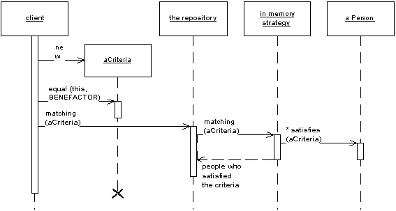

Gérer l'accès aux données dans une application
Isolation nette entre la “couche données” et le “reste du monde”
SGBD X en dév/prod, In memory en test
Pas de Doctrine qui fuite
Facile : on fait des repositories !
class DbCompanyRepository implements CompanyRepository
{
public function findBySlug($slug) { }
public function findPublic() { }
# …
}
class DbCompanyRepository implements CompanyRepository
{
public function add(Company $company) { }
public function remove(Company $company) { }
public function findBySlug($slug) { }
public function findPublic() { }
public function findPrivate() { }
public function findDeleted() { }
public function findByNameLike($search) { }
public function findByNameOrDescriptionLike($search) { }
public function findPublicByNameOrDescriptionLike($search) { }
# …
}
“A Repository mediates between the domain and data mapping layers, acting like an in-memory domain object collection. Client objects construct query specifications declaratively and submit them to Repository for satisfaction.”Martin Fowler — http://martinfowler.com/eaaCatalog/repository.html

“The central idea of Specification is to separate the statement of how to match a candidate, from the candidate object that it is matched against.”Martin Fowler — http://martinfowler.com/apsupp/spec.pdf
$specification = new Specification('publique ET vers Lyon');
class DbCompanyRepository implements CompanyRepository
{
public function add(Company $company) { }
public function remove(Company $company) { }
public function matching(Specification $spec) {}
}
class CompanyPublic implements Specification
{
public function getRule()
{
return 'public = 1';
}
public function getParameters()
{
return [];
}
}
$specs = new RulerZ\Spec\AndX([
new Domain\Spec\CompanyPublic(),
new Domain\Spec\CompanyNear('Lyon'),
]);
$companies = $repository->matching($specs);
public function matching(Specification $spec)
{
$qb = $this->createQueryBuilder('c');
return $this->rulerz->satisfiesSpec($qb, $spec);
}